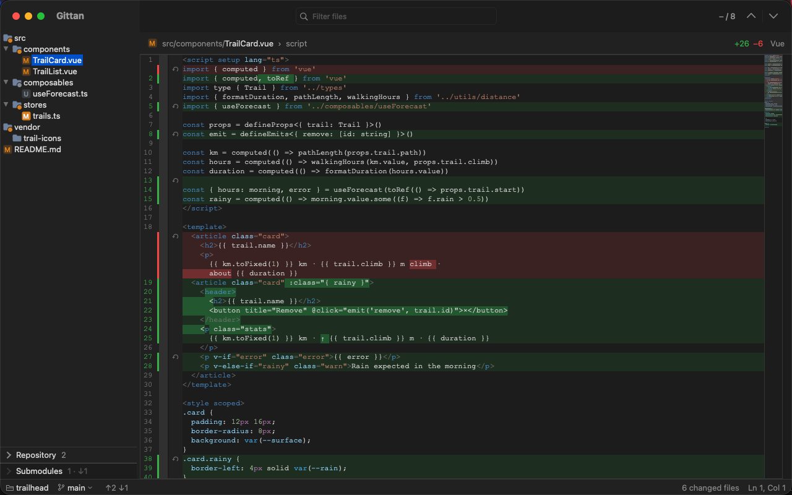

Gittan
Git Tree Analyzer & Navigator
A native viewer for your git repository. See what you changed as you change it, who wrote each line, and how a piece of code got the way it is.
macOS · Windows · Linux

Git Tree Analyzer & Navigator
A native viewer for your git repository. See what you changed as you change it, who wrote each line, and how a piece of code got the way it is.

A small Vue and TypeScript project as Gittan shows it: a few changes not committed yet, two commits not pushed, and a submodule that moved on.


Gittan does not commit, push or merge. It shows the difference between your work tree and a commit, and keeps that view fresh while you edit in whatever you like.
A background thread polls the repository every two seconds. Save a file in your editor and the tree, the counts and the diff update on their own.
Keep only the changed lines with 1, 3, 5 or 10 lines of context. Click a gap to open it. Highlighting still covers the whole file, so nothing colors wrong.
Old on the left, new on the right, scrolled in step, each side numbered from its own file. Or a single view with deleted lines kept in place.
Over 370 lexers from the CudaText collection, picked by file name. Colors are tuned for both light and dark backgrounds.
Diff against HEAD by default, or pick a branch, a tag, a commit or a snapshot. The tree, the counts and every file diff follow the base you chose.
Follows the desktop theme, and switches when it does. The native tree, menus and status bar come from the platform, so it looks at home everywhere.
Keep scrolling at the bottom of a file and the next one pulls in. Step changes with F7, files with F8, or click a row in the summary.
Right-click a file to copy its path, reveal it in Finder or the file manager, or open it in the editor of your choice. ⌘⌥T opens the repository in a terminal.
A badge fills as a change gets staged: a tint for none of it, a ring for part, solid for all. The header says "staged" or "partly staged" too.
A button beside each block of changed lines puts it back the way it is in HEAD, or in the base you compare with. Gittan asks first.
A changed PNG, JPEG, GIF and the like shows as the two pictures next to each other, at the same scale.
Fold functions, classes and other blocks the lexer knows, in the file view and in the unified diff.
Every line has a past. Gittan reads it from git and lays it next to the code, so you can tell who changed what, when, and why it looks the way it does.
Put the caret in a function or select a few lines, then ⌘⇧H. Each line gets its earlier versions under it, one color per commit.
Who last changed each line, and when, beside the code with ⌘⇧B. Click a cell to see that whole commit against its parent.
Compare With > Other takes a range: main...feature shows what a branch changed since it left main, v1..v2 what came between two tags.
Take a snapshot of the work tree with ⌘⇧N and compare against it later, to see what the last round of edits did without committing anything.
Hover a word to see where it is defined, and jump there with F12. Gittan finds it through the lexer's code tree, with no language server to set up.
List the symbols of the shown file with ⌘T, or of the whole repository with ⌘⇧T, and type a few letters to get there.
⌘3, or a click on the ahead and behind counts in the status bar, draws the branches with what is not pushed or not pulled yet.
With the gh CLI signed in, the status bar shows the branch's pull request and its checks, and the review comments appear under the lines they are about.
Every submodule in a section of its own, with the new commits on its remote. Gittan checks again every five minutes, and fetches nothing.
Packaged builds for every platform are on the Releases page. Pick the file for your system.
git command line tool, so git must be installed and on your PATH. The macOS build is signed ad hoc, so macOS blocks it at first: drag it to Applications, then run xattr -cr /Applications/Gittan.app in Terminal. Every push to main is also built on GitHub Actions, where the artifacts of the newest run are the current development build.
Gittan is a Free Pascal application built with Lazarus. The editor (ATSynEdit), the highlighter (EControl) and the lexers are git submodules, so fetch them and register their packages with Lazarus before the first build.
Lazarus 5.0 with FPC 3.2.2 or later. On Linux also the Qt 6 bindings: qt6-base-dev libqt6pas6 libqt6pas-dev. On macOS, the Xcode Command Line Tools.
git clone --recursive https://github.com/slicke/gittan.git
cd gittan
# Cloned without --recursive, or pulled a submodule change?
git submodule update --init --recursive
Lazarus has to know where the packages are. Add them in this order, since each depends on the ones before it.
for p in ATFlatControls/atflatcontrols/atflatcontrols_package.lpk \
EncConv/encconv/encconv_package.lpk \
BGRABitmap/bgrabitmap/bgrabitmappack.lpk \
ATSynEdit/atsynedit/atsynedit_package.lpk \
EControl/econtrol/econtrol_package.lpk \
ATSynEdit_Ex/atsynedit_ex/atsynedit_ex_package.lpk; do
lazbuild --add-package-link vendor/$p
done
On Windows run the same lazbuild --add-package-link for each file in PowerShell, or open each .lpk once in the IDE (Package > Open Package File), which registers it.
make # cocoa on macOS, qt6 on Linux make run # Windows, where there is no make: .\make.ps1 .\make.ps1 run
/Applications/lazarus on macOS when it is not on PATH; make.ps1 looks in C:\lazarus and C:\fpcupdeluxe\lazarus.vendor/CudaText-lexers into lexlib/. A build from the Lazarus IDE does not: run make lexlib once.